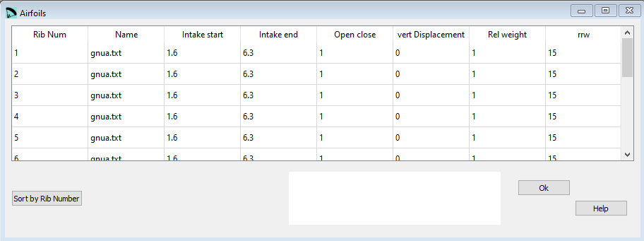

Airfoils¶
In the Airfoils window you can define the parameters from the 2nd section of the lep file.
{kind=link}
Raw data:
**************************************************************
* 2. AIRFOILS *
**************************************************************
* Airfoil name, intake in, intake out, open , disp. rrw
1 gnua.txt 1.6 6.3 1 0 1 15
2 gnua.txt 1.6 6.3 1 0 1 15
3 gnua.txt 1.6 6.3 1 0 1 15
4 gnua.txt 1.6 6.3 1 0 1 15
5 gnua.txt 1.6 6.3 1 0 1 15
6 gnua.txt 1.6 6.3 1 0 1 15
7 gnua.txt 1.6 6.3 1 0 1 15
8 gnua.txt 1.6 6.3 1 0 1 15
9 gnua.txt 1.6 6.3 1 0 1 15
10 gnua.txt 1.6 6.3 1 0 1 15
11 gnua.txt 1.6 6.3 1 0 1 15
12 gnua.txt 1.6 6.3 0 0 1 15
13 gnua.txt 1.6 6.3 0 0 1 15
14 gnuat.txt 0.0 6.3 0 0 1 1
Airfoil name¶
Name of the file containing the rib profile used for this cell. Before processing finally the wing you must assure the file is saved in the same directory also the processor is placed.
Intake start¶
Percentage of chord where the start of the air inlet shall be placed.
Intake end¶
Percentage of chord where the end of the air inlet shall be placed.
Open close¶
Value 1 or 0 to create open or closed cells, at the left of rib.
“0” indicates closed cell
“1” indicates an open cell
vert Displacement¶
Displacement in [cm] of the rib perpendicular to the chord, and in the plane of the rib itself. Serves to improve the position of the ribs without suspension lines. Value is usually 0.

Rel weight¶
Relative weight of the chord, in relation to the load. Value is usually 1.
rrw¶
Depending of the wing type there are two different properties which can be defined.
Single skin wings¶
“0” means that the triangles are not rotated, but they are set according to the angle “beta” specified in Geometry.
“1” means that the triangles are rotated automatically in the corresponding profile.
Double skin wings¶
If the numerical value greater than 1.0 is possible define and draw trailing edge “miniribs” in non “ss” paragliders: The value, simply define the minirib length (in % chord).

Sort by Rib Number¶
The button Sort by Rib Number can be used to rearrange the definition lines. If for whatever reasons you will rearrange the lines, just define the rib numbering in an ascending order and press the Order button afterwards. Lepg will reorder the lines according to the numbering you’ve choosen.
ATTENTION you have to order the lines in a way that the wing is defined from the middle to the tip.
A more detailed description you can find here Laboratori d'envol website.